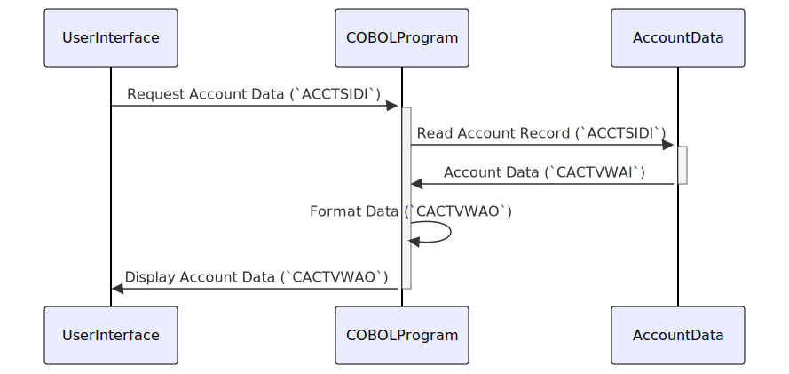

Gerado em: 1º de outubro de 2024
Título do Documento: Especificação da Estrutura de Dados da Visualização da Conta de Cartão
Descrição Resumida:
Este documento descreve a estrutura dos dados usados para visualizar informações da conta de cartão de crédito no aplicativo CardDemo. Ele define duas estruturas de dados COBOL: CACTVWAI para recuperação de dados brutos e CACTVWAO para exibição formatada.
Histórias do Usuário: Como desenvolvedor de sistema, preciso de uma maneira padronizada de recuperar e apresentar informações da conta de cartão de crédito de forma consistente em diferentes partes do aplicativo CardDemo.
Épico Relacionado: 2 - Gerenciamento de Conta
Requisitos Técnicos:
CACTVWAI e CACTVWAO.CACTVWAI armazenará dados brutos conforme buscados no armazenamento.CACTVWAO será uma redefinição de CACTVWAI, fornecendo dados formatados para exibição.CACTVWAI deve ter um campo correspondente em CACTVWAO.CACTVWAO devem ser formatados adequadamente para exibição (por exemplo, campos numéricos com vírgulas e pontos decimais).COACTVW.CPY.Modelos Relacionados:
CACTVWAI:
ACCTSIDI Alphanumeric(11): ID da conta exclusiva.ACSTTUSI Alphanumeric(1): Status da conta (por exemplo, ‘A’ para Ativo, ‘C’ para Fechado).ACRDLIMI Alphanumeric(15): Limite de crédito (formatado como texto).ACURBALI Alphanumeric(15): Saldo atual da conta (formatado como texto).ACSFNAMI Alphanumeric(25): Primeiro nome do cliente.ACSMNAMI Alphanumeric(25): Nome do meio do cliente.ACSLNAMI Alphanumeric(25): Sobrenome do cliente.ACSADL1I Alphanumeric(50): Linha de endereço do cliente 1.ACSSTTEI Alphanumeric(2): Código de estado do endereço do cliente.ACSADL2I Alphanumeric(50): Linha de endereço do cliente 2.ACSZIPCI Alphanumeric(5): CEP do endereço do cliente.ACSCITYI Alphanumeric(50): Cidade do cliente.ACSCTRYI Alphanumeric(3): Código do país do cliente.ACSPHN1I Alphanumeric(13): Número de telefone do cliente 1.ACSGOVTI Alphanumeric(20): Número de identificação governamental do cliente (por exemplo, CPF).ACSPHN2I Alphanumeric(13): Número de telefone do cliente 2.ACSEFTCI Alphanumeric(10): Data efetiva do cliente (data em que as informações do cliente entraram em vigor).ACSPFLGI Alphanumeric(1): Sinalizador de perfil do cliente (indica atributos ou sinalizadores específicos do cliente).INFOMSGI Alphanumeric(45): Mensagens informativas relacionadas à conta.ERRMSGI Alphanumeric(78): Mensagens de erro relacionadas à conta.CACTVWAO:
CACTVWAI com formatação apropriada para exibição.Configurações:
Melhorias de Código:
Melhorias de segurança:
Diagrama Conceitual:
–Made by “Smart Engineering” (by Compass.UOL)–